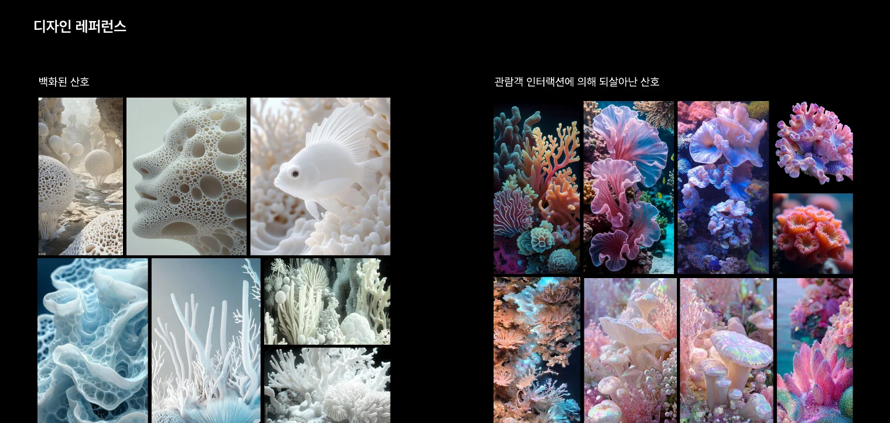
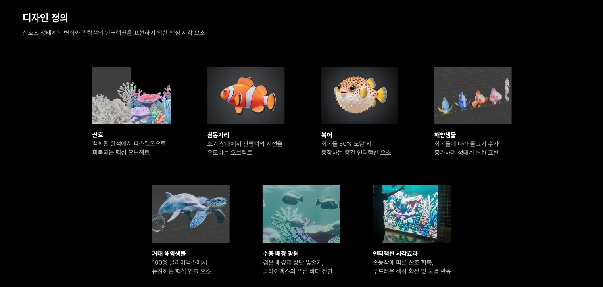
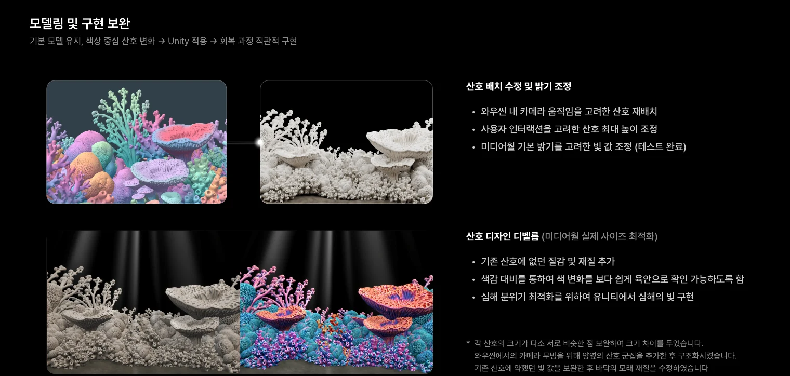

심해 네이비
#020C16공간과 화면의 바탕
 공명체
공명체백화된 산호에서 살아 있는 생태계까지. 형태·재질·빛·움직임을 통해 변화의 과정을 시각화했습니다.
제작 과정 살펴보기 ↓신비로움 · 공명
생동감 · 회복과 공존
깊은 청색의 여백과 수중광 위에 청록, 라일락, 코럴의 색을 겹칩니다. 안개와 원근으로 깊이를 만들고 빛은 산호와 관람객의 반응 지점에 집중합니다.
백화 전후의 형태는 유지하고, 거친 아이보리 표면에서 은은한 진주광과 색으로 전환합니다. 작은 반응이 전체 생태계의 생동감으로 확장되는 것이 디자인의 중심입니다.
#020C16공간과 화면의 바탕
#12374D깊이와 수중광
#93C4BA회복과 반응
#B3A0CE신비로운 변주
#E69AAB생명의 강조
#E5E1D6백화 상태
웹사이트의 공통 색채 기준. 어두운 바탕과 여백을 확보하고, 밝은 산호색은 회복과 주요 반응에 집중해 사용합니다.

크게 보기 ↗Blender에서 5종의 산호 구조를 구성하고, 같은 형태 안에서 색과 재질이 전환되도록 정리했습니다.
흰동가리·블루탱·해마 등 생물을 구성하고 리깅과 애니메이션으로 유영의 리듬을 만듭니다.
미디어월의 밝기와 관람객의 손이 닿는 높이에 맞춰 산호와 조명을 조정했습니다. 카메라 이동이 이어지는 장면을 위해 양옆에 산호 군집을 배치하고, 산호의 크기 차이와 표면 질감을 다듬었습니다.

크게 보기 ↗
크게 보기 ↗가지형·판형·관형·군집형을 배치하고, 크기·회전·간격을 달리해 반복감을 줄입니다.
해양생물의 움직임으로 정적인 바다가 점차 살아나는 흐름을 표현합니다.
초기 장면에는 어두운 바탕과 위에서 내려오는 빛줄기를 사용합니다. 산호가 모두 회복되는 장면에서는 푸른 바다로 전환되며, 중앙 여백을 통해 생물과 손짓의 반응을 볼 수 있습니다.